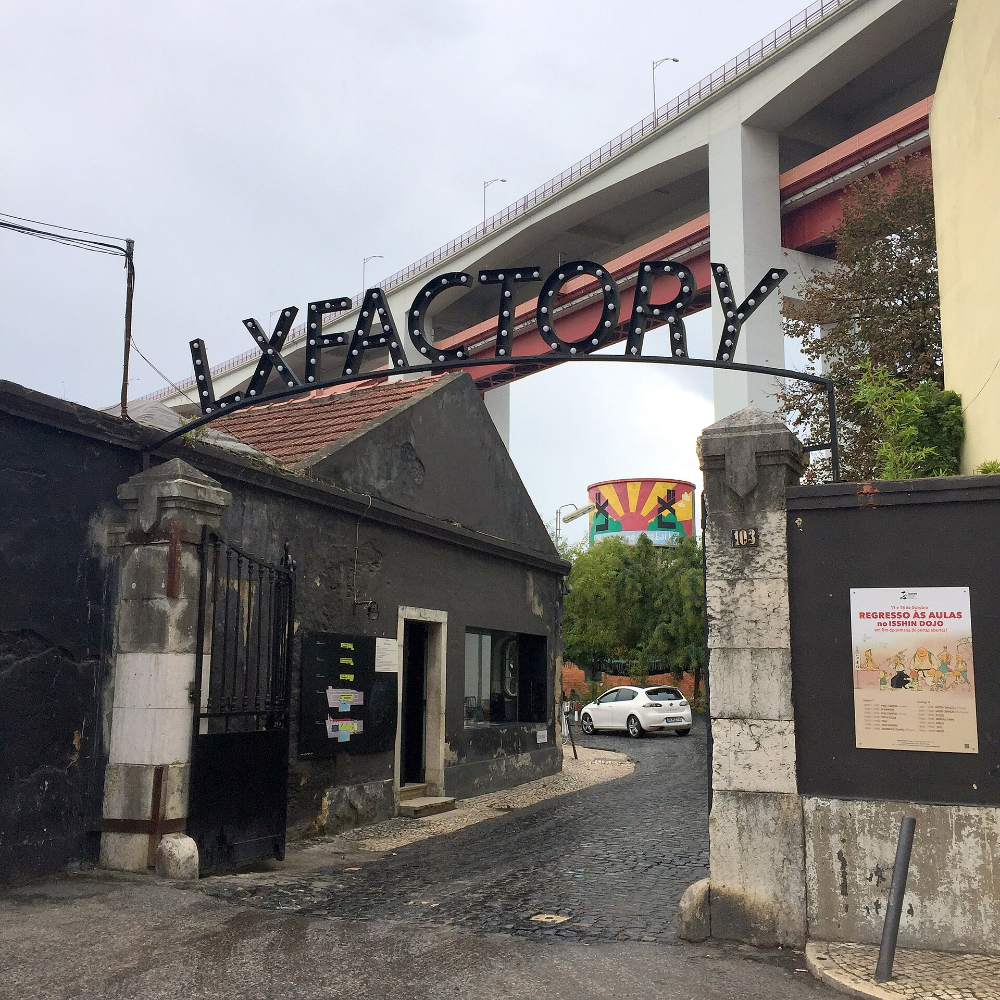
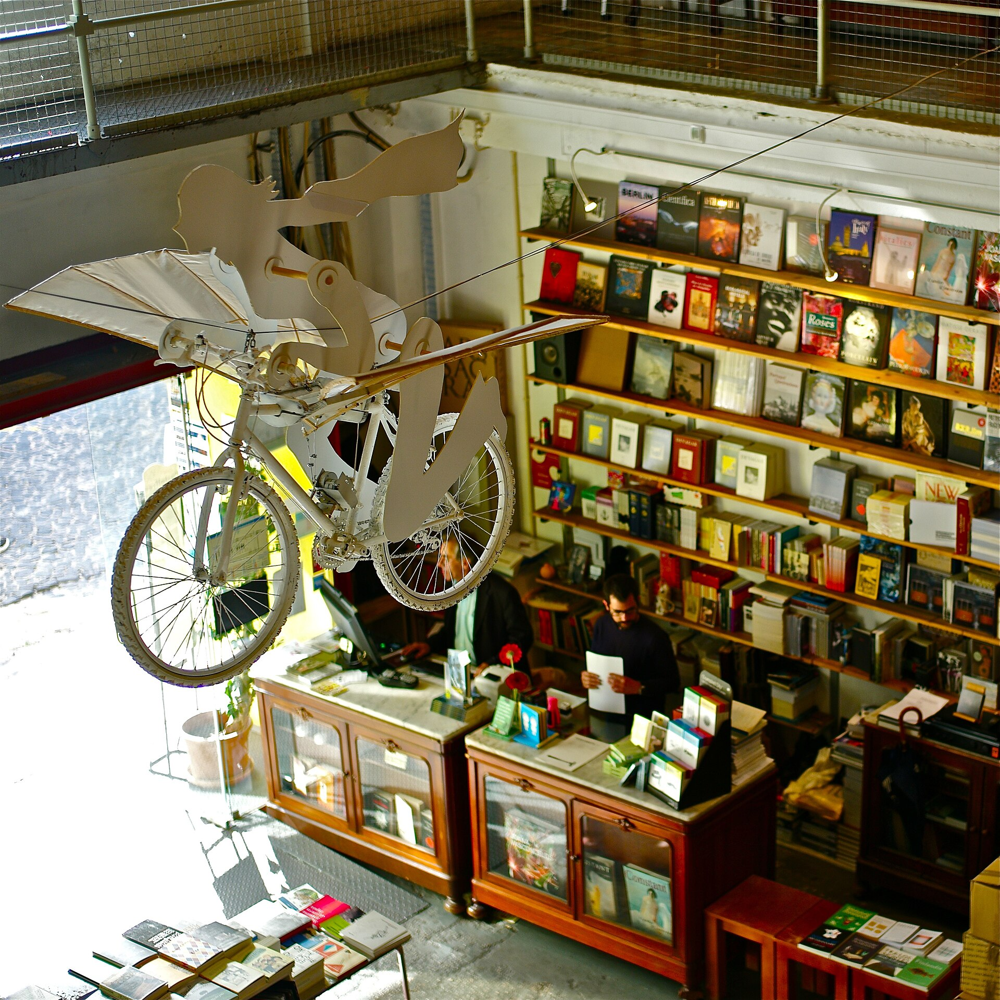
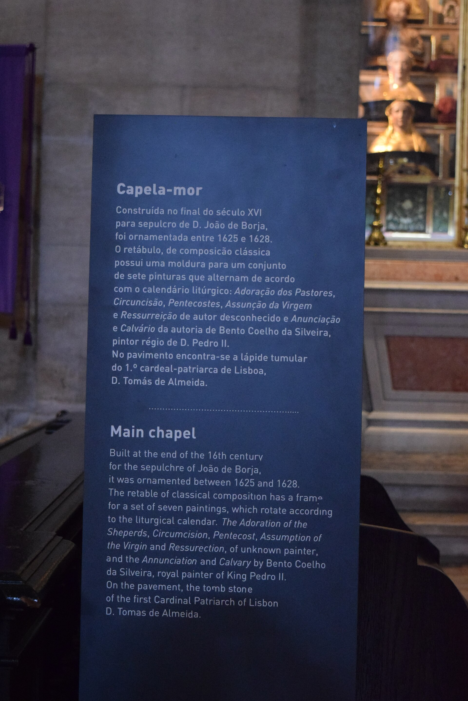
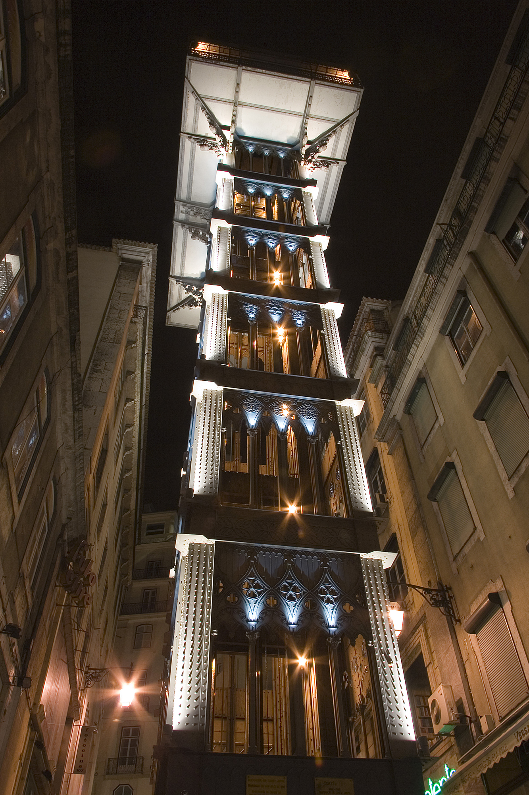
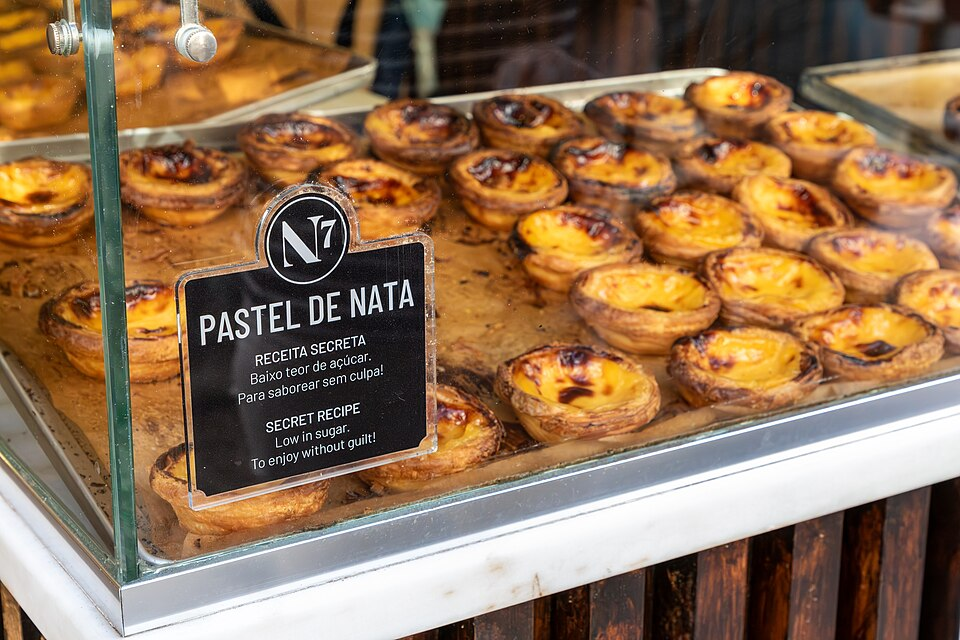
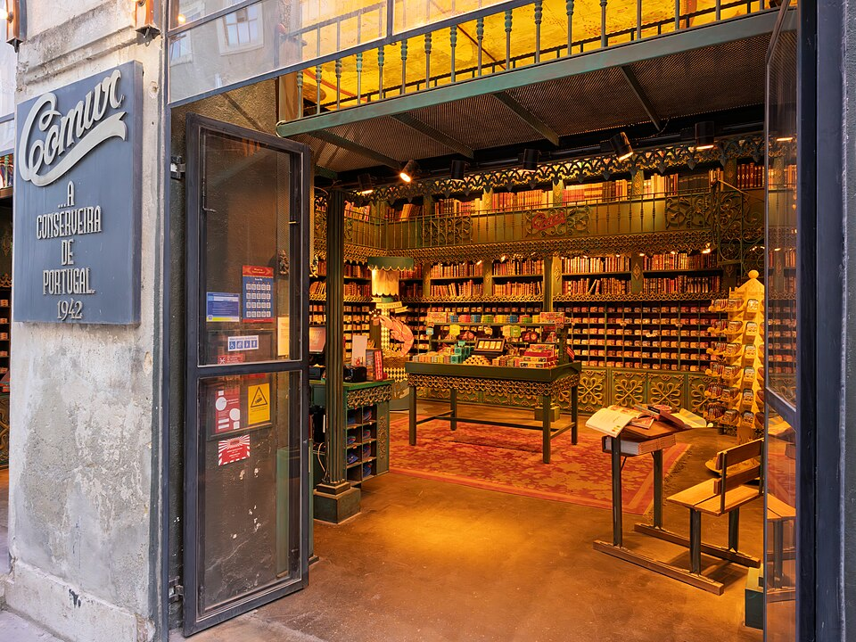
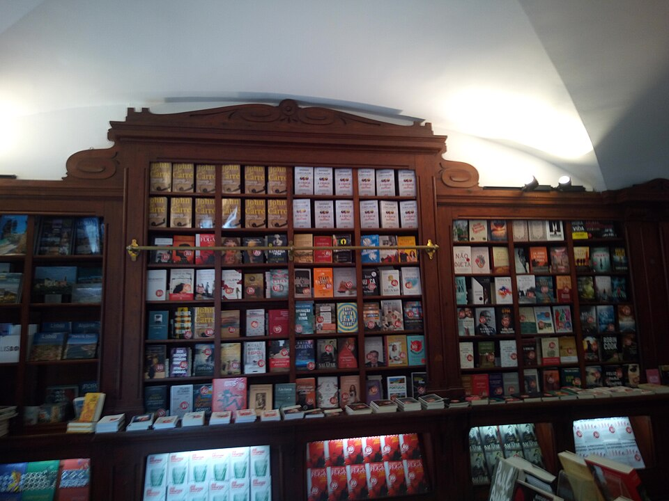
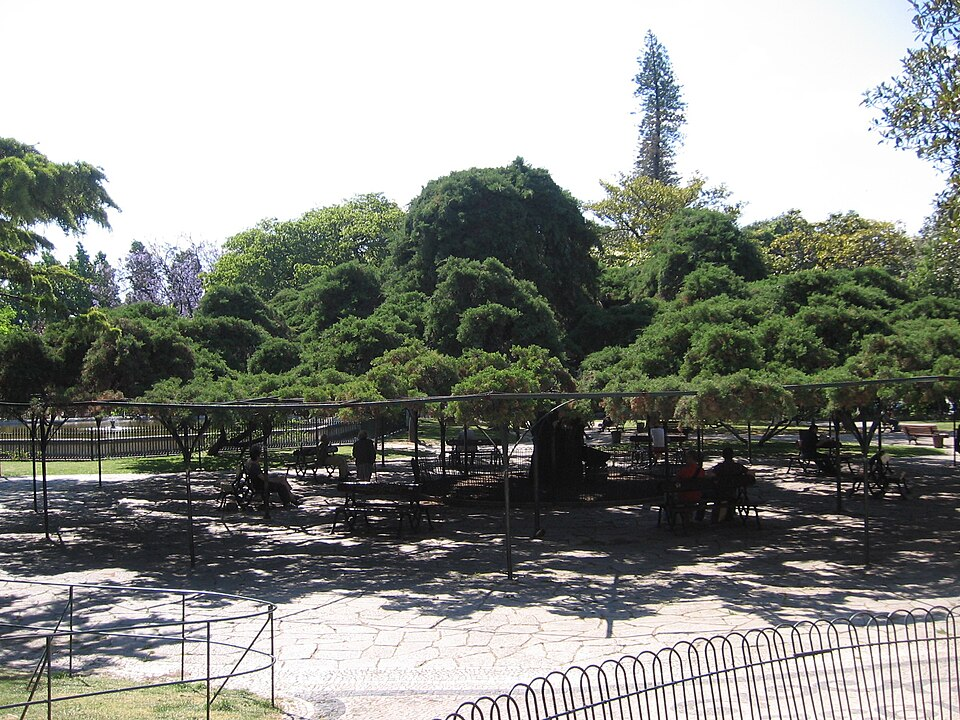
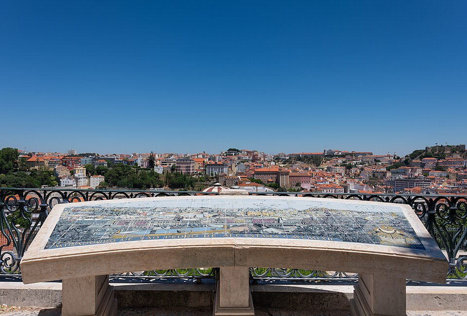

Two Days in Lisbon · Day 2 of 2 · West
A lighter day: a slow morning, then a reborn factory full of makers for lunch and the elegant heart of the city for shops, coffee and a sunset finish. (Belém sits this trip out — the castle on Day 1 is your grand monument.)
the creative-industrial lunch
A 19th-century factory complex under the big bridge, reborn as a village of design shops, murals, cafés and a famous bookstore. Genuinely cool, easy with kids (open courtyards, room to roam) — a slow start to the day and the lunch stop before downtown.


downtown
Lisbon’s elegant heart: shopping streets, historic cafés, a gilded church, craft shops and garden squares, all walkable uphill from one garage. The afternoon for browsing, coffee, and a sunset viewpoint.







← Day 1: Waterfront, Tile & the Old Town · Arrábida day trip